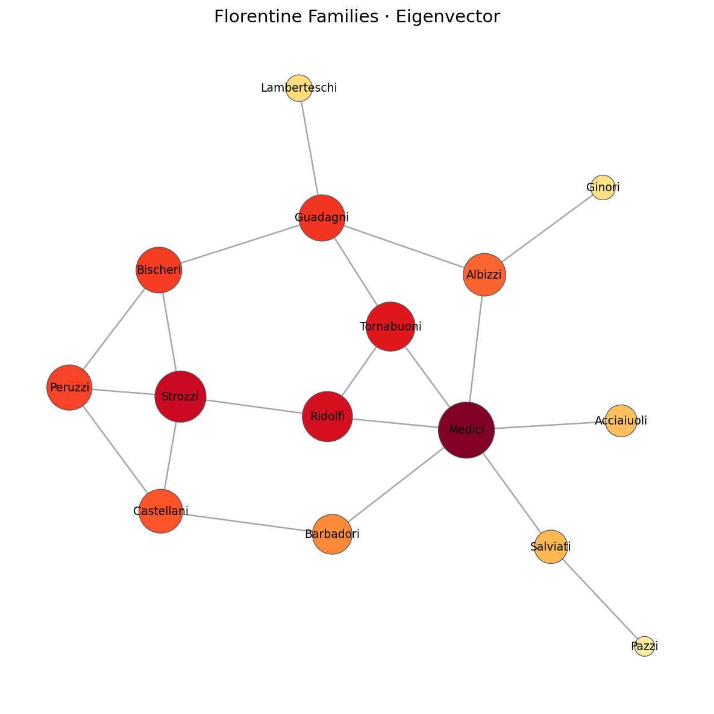

Florentine Families
無向網絡 · 15 個家族 · 20 條婚姻關係 · Eigenvector Centrality

Ranking
| rank | label | wealth | Eigenvector | Degree | Betweenness |
|---|---|---|---|---|---|
| 1 | Medici | 103 | 0.430 | 6 | 0.522 |
| 2 | Strozzi | 146 | 0.356 | 4 | 0.103 |
| 3 | Ridolfi | 27 | 0.342 | 3 | 0.114 |
| 4 | Tornabuoni | 48 | 0.326 | 3 | 0.092 |
| 5 | Guadagni | 8 | 0.289 | 4 | 0.255 |
| 6 | Bischeri | 44 | 0.283 | 3 | 0.104 |
| 7 | Peruzzi | 49 | 0.276 | 3 | 0.022 |
| 8 | Castellani | 20 | 0.259 | 3 | 0.055 |
| 9 | Albizzi | 36 | 0.244 | 3 | 0.212 |
| 10 | Barbadori | 55 | 0.212 | 2 | 0.093 |
| 11 | Salviati | 10 | 0.146 | 2 | 0.143 |
| 12 | Acciaiuoli | 10 | 0.132 | 1 | 0.000 |
| 13 | Lamberteschi | 42 | 0.089 | 1 | 0.000 |
| 14 | Ginori | 32 | 0.075 | 1 | 0.000 |
| 15 | Pazzi | 48 | 0.045 | 1 | 0.000 |